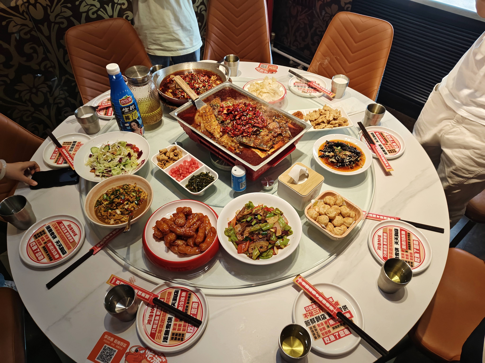

第四周总结
忙
第四周总结（9.22-9.28）
本周事情不多，由于下周就要放国庆中秋假期了，所以任务都推到下周了。
首先是小论文的修改。因为还是没什么头绪，所以就上网找了论文延期的模板，一番修改后就发给师兄，之后就没再管了。至于具体要怎么修改还是感觉不好下手，但已经从容多了，至少有把握假期里改出来一版。
然后本周比较关键的就是师兄博士毕业，要在学校附近的一家烤鱼店聚一次餐。聚餐之前的组会还是照常进行，最后师兄在组会上总结了读博期间的种种，也分享了一些心得。对于师兄的心得，我还是十分关注的，主要内容如下：
- 先开始写再完善。写作本身就是思考的过程，写不下去时可以尝试读文献，处理数据，完善模型。
- 接受不完美。研究工作是在有限的条件下追求最优解，接受了不完美，才能保持心态平和，持续前行。
- 建立支持系统。心理上要有情感支持系统，身体上要保持锻炼。
- 英语的听说读写能力
- 积极参与学术汇报，锻炼语言组织、上台演讲和与人交流的能力。
- 提前熟悉项目申报流程和申请书的撰写。
- 要有真正可以干活的技能，成果要有应用价值
- 要有发现问题、解决问题、成果展示系统的科研思维和能力

在刷小红书时看到了关于ADHD适合把一天分为三天过的内容，之后实践了一下，发现确实有用。具体来说，这个思路可以让我不会再因为一件事而毁掉一天的规划，最多影响"一天"。而且由于事情多，也不会无聊。困难在于习惯的养成，不然隔一段时间用一次也没什么用，所以先用一段时间再说吧。
本周还有一件比较重要的事，就是我终于下单了相机——松下的G97。回想我在大学时的三个小愿望：自行车、相机以及自己的小屋，目前已经实现了两个。关于三个小愿望，之后再细聊。说回相机，由于预算有限（5000）所以在豚鼠学长的推荐下购入了松下M43画幅的套机G97，镜头是1260。目前的体验是够用了，至少像相机的参数、构图、光影、色彩等够我研究好长时间了。
第四周就是这样。